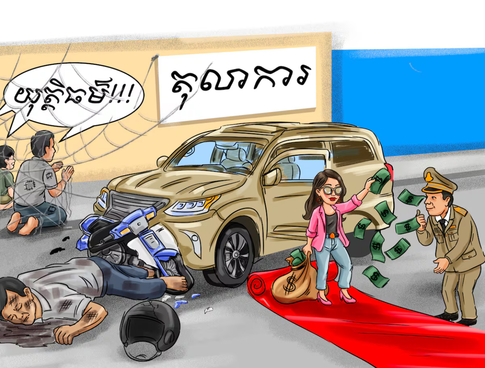
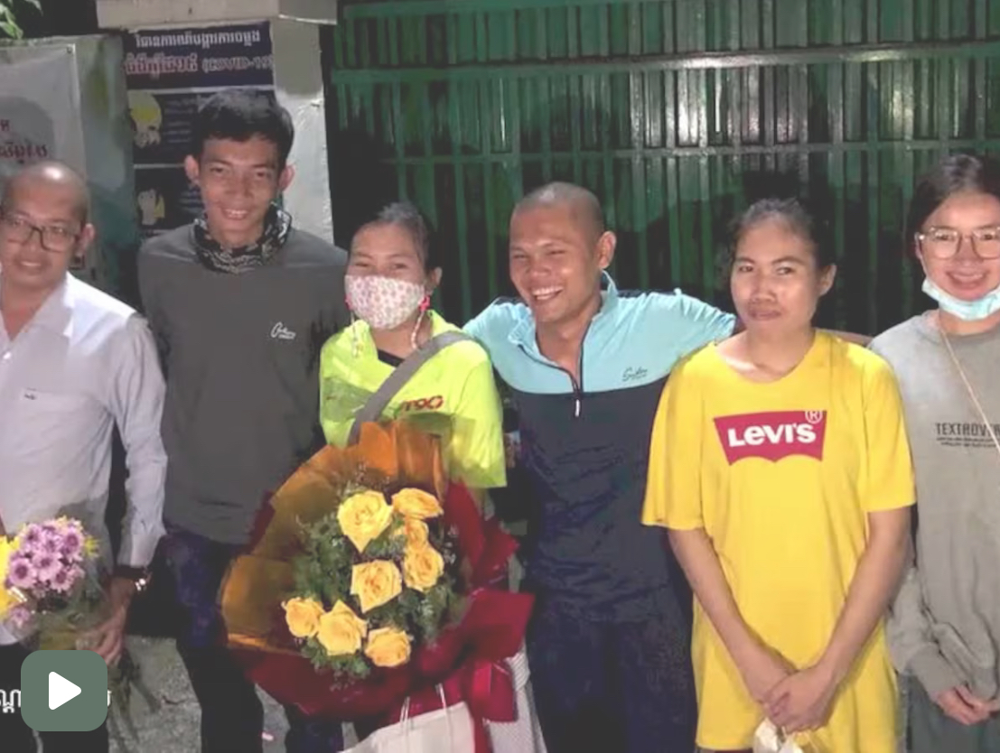
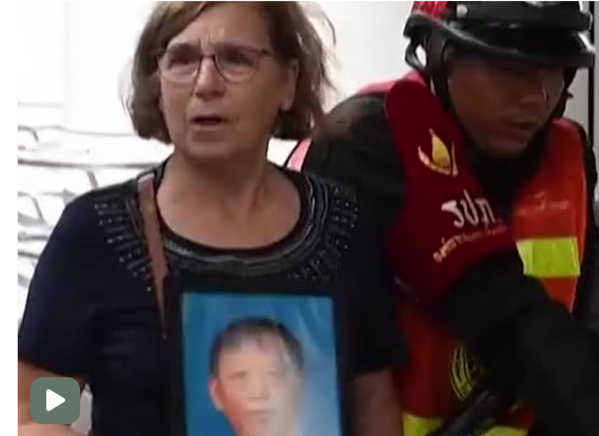
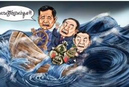
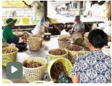
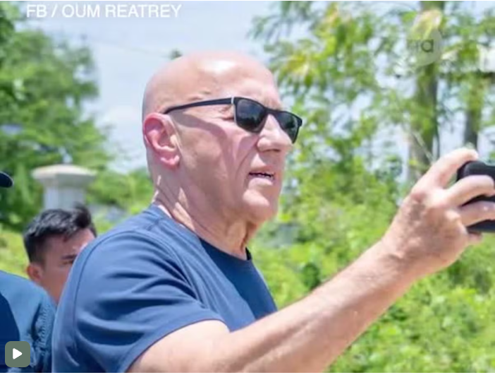
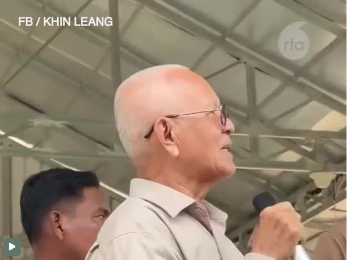

ទឹកលុយ និងអំណាច «ទាក់ទាញចិត្តអ្នកមាន» សម្រាប់ពលរដ្ឋក្រីក្រ
ទឹកលុយ និងអំណាច បានក្លាយជាឧបសគ្គ ដល់ការស្វែងរកយុត្តិធម៌ជូនជនរងគ្រោះពីគ្រោះថ្នាក់ចរាចរណ៍៕

ទឹកលុយ និងអំណាច បានក្លាយជាឧបសគ្គ ដល់ការស្វែងរកយុត្តិធម៌ជូនជនរងគ្រោះពីគ្រោះថ្នាក់ចរាចរណ៍៕
កាស៊ីណូ និងអាគារជាច្រើន នៅខេត្តកណ្ដាលជាប់ព្រំដែនវៀតណាម ក៏ជាប់ពាក់ព័ន្ធនឹងការឆបោកអនឡាញ មិនចាញ់នៅតំបន់ព្រំដែនកម្ពុជា-ថៃឡើយ៕
អ្នកនាំពាក្យរដ្ឋាភិបាលកម្ពុជាឯករាជ្យ ២៣តុលាលើកឡើងថា រដ្ឋាភិបាលត្រកូល ហ៊ុន នឹងបន្តចាប់ខ្លួនពលរដ្ឋណា ដែលហ៊ានបញ្ចេញមតិប្រឆាំងការលក់ជាតិ៕
លោក ម៉ា ចិត្រា និងបណ្ដាញព្រៃឡង់ នៅថ្ងៃទី០៣សីហា បានចូលជួបមេធាវីក្រសួងបរិស្ថាន រឿងរិះគន់មន្ត្រីគប់គិតកាប់ព្រៃឡង់៕

សូមប្រិយមិត្តចូលរួមដាក់ចំណងជើងឱ្យរូបត្លុកនេះទាំងអស់គ្នា!
កសិករដាំទុរេននៅបាត់ដំបងត្អួញត្អែងតម្លៃធ្លាក់ចុះ ដោយសារមានការនាំចូលពីវៀតណាម៕


កម្ពុជាត្រៀមការពារសិទ្ធិមនុស្សរបស់ខ្លួននៅក្រុមប្រឹក្សាសិទ្ធិមនុស្ស...
«លោក ហ៊ុន ម៉ាណែត នៅតែជាអាយ៉ងនយោបាយ...»
រូបភាពកំប្លែងនយោបាយ៖ ការពឹងពាក់ចិនរបស់លោក ហ៊ុន ម៉ាណែត...
លោក ថម អេនឌ្រូ ថា តាមច្បាប់អន្តរជាតិ ជនភៀសសឹកខ្មែរជាង២ម៉ឺននាក់ ត្រូវតែត្រឡប់ទៅផ្ទះវិញ ដោយមិនត្រូវមានការរារាំងពីកងទ័ពថៃ៕



